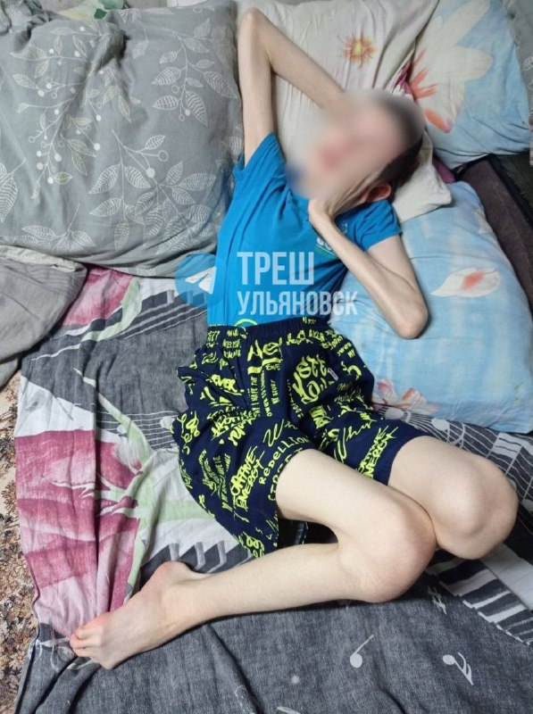

01
Общество и городская среда · событие дня
Семья несколько месяцев не может добиться госпитализации и обследования
По словам родственников, обратившихся за помощью в редакцию канала «Треш Ульяновск», Михаил — лежачий инвалид I группы, тяжелая форма ДЦП. С 2020 года у него регулярные язвенные кровотечения в пищеводе, с 2024-го — судороги, удушье и цианоз; приступы он переносит в сознании.…